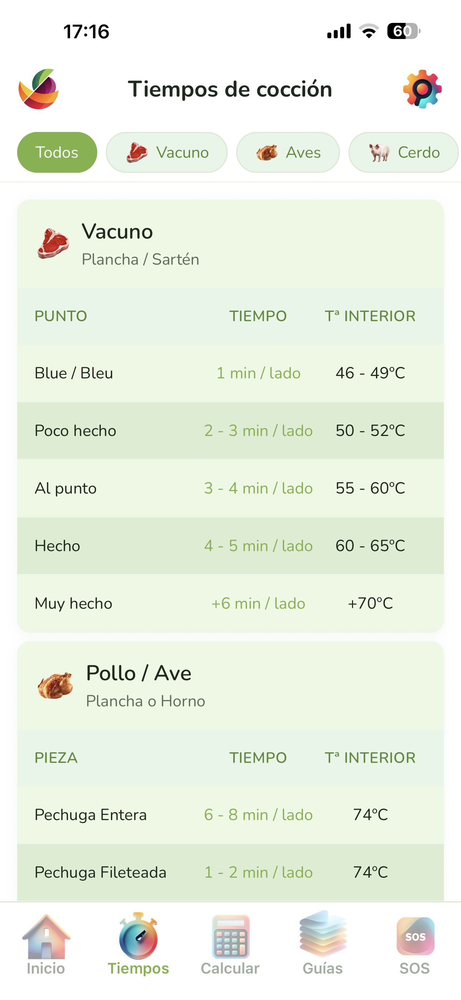

Consulta al instante el tiempo exacto para cualquier ingrediente, según el método de cocción y el punto que buscas. Horno, plancha, vapor, hervido o microondas — con temperaturas de referencia incluidas.
No solo el tiempo: también la temperatura recomendada para cada preparación. Así el horno ya está en el punto justo cuando introduces la bandeja.
Escribe el ingrediente y la app te muestra los tiempos al instante. Sin scrollear entre listas interminables.
Para carnes y pescados, varios niveles: poco hecho, al punto, bien hecho. Cada uno con su tiempo y temperatura.
Desde una pechuga de pollo hasta unos espárragos al vapor o unos macarrones hervidos. Todos los ingredientes habituales cubiertos.
| Ingrediente | Método | Tiempo | Temperatura |
|---|---|---|---|
| Pechuga de pollo entera | Horno | 25–30 min | 180 °C |
| Espárragos | Vapor | 8–10 min | — |
| Pasta (espaguetis) | Hervido | 8–10 min | Agua hirviendo |
| Filete de ternera (al punto) | Plancha | 3 min / lado | Plancha muy caliente |
| Patatas medianas | Horno | 45–60 min | 200 °C |
Disponible para iPhone y Android. Sin anuncios, sin suscripciones.